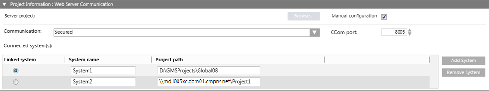

Project Information: Web Server Communication Expander on Client/FEP
This allows you to configure the server project details for linking to the web application. On the Client/FEP, you can configure in either automatic or manual mode.

Item
Description
Manual configuration
Select this check box to configure the web application by manually entering the details. It enables the communication mode, CCom port, and Add System. It also allows you to enter the system name and project path of the server project. In manual mode, since the project details must be entered manually, there is no requirement for the service port; therefore, service port is disabled. You can also set the home system by selecting any of the listed linked systems.
Server project
(Available only in automatic mode) First ensure that you have provided the valid server name. Then, click Browse and select the Server project using the Project Information dialog box.
Communication
By default, it is Secured and Disabled, indicating that you cannot work with Windows App client. In automatic mode, the Communication mode is configured according to the selected server project. If the Communication mode of the selected server project is Local, then the web application, is also created with the Local mode. In this case, you cannot work with the Windows App Client. Therefore, you have to manually edit the Communication mode of the server project to Secured and then Align with Server to update the Communication mode of the web application to Secured. In manual mode, you must configure it manually matching the Server project's web communication mode. The communication mode must match the selected Server project's web communication mode.
CCom port
By default it is Disabled. In Automatic mode, it displays the CCom port number of the selected server project. In manual mode, you must manually configure the port number so it matches the port number of the selected Server project.
Add System
By default it is Disabled. When you configure the Web application in automatic mode, the project linked to the web application is selected by default and other projects in distribution with the project linked to the web application are also listed with their respective system name and project path. In manual mode, when clicked, it adds an empty row for manually configuring the Home system, system name and the project path. Linked system: Indicates to which project the web application is currently linked to. In automatic mode, all the projects in distribution with the selected Server project are listed and, by default, the project linked to the Web application is selected. System Name: The system name configured in the project. This can be a project linked to the web application or a project in distribution with the project linked to the web application. Project Path: In automatic mode, this is automatically added depending on the selected Server project and whether it is already shared with the web application user. In manual mode, you must type the valid shared project path depending on the selected Server project.
Remove System
Allows you to remove the selected row for system details.